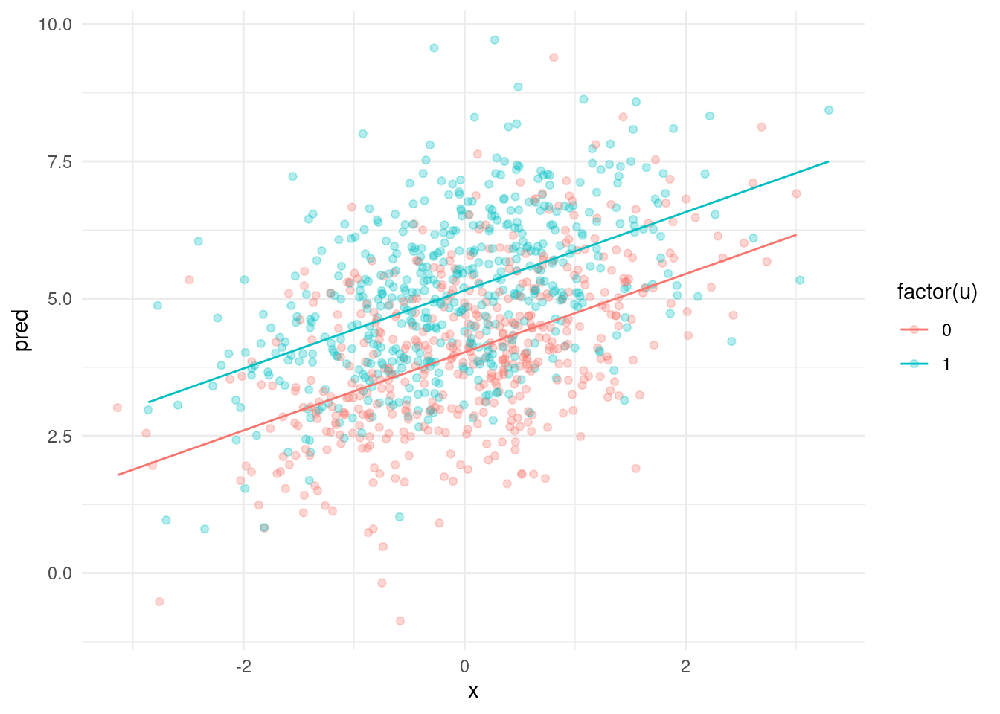

So far we have been working with only 1 independent variable at a time. It’s time to move on to multiple predictors.
What is statistical control?
When we include more than one predictor we often say that we are controlling for a number of variables in the model. This innocent-sounding term can actually sometimes cause quite a head ache to wrap your head around it. What does it mean to control for a variable?
One seemingly simple answer is that controlling means estimating the effect of one variable while holding the other variable constant. We’ll look at what exactly that means in this class. As a first approximation lets make a simple graphical interpretation of statistical control. We will denote x as the min independent variable, u as the control variable and y as the dependent variable.
library(tidyverse)
── Attaching core tidyverse packages ──────────────────────── tidyverse 2.0.0 ──
✔ dplyr 1.1.4 ✔ readr 2.1.5
✔ forcats 1.0.0 ✔ stringr 1.5.1
✔ ggplot2 3.5.1 ✔ tibble 3.2.1
✔ lubridate 1.9.3 ✔ tidyr 1.3.1
✔ purrr 1.0.2
── Conflicts ────────────────────────────────────────── tidyverse_conflicts() ──
✖ dplyr::filter() masks stats::filter()
✖ dplyr::lag() masks stats::lag()
ℹ Use the conflicted package (<http://conflicted.r-lib.org/>) to force all conflicts to become errors
N <-1e3x <-rnorm(N)u <-rbinom(N,1,.5)y <-rnorm(N, 4+ .7*x +1*u, 1.3)df <-data.frame(x, u, y)df$pred <-lm(y ~ x + u, df) |>predict() # get predicted values from the model#plot predictions and raw data df %>%ggplot(aes(x = x, y = pred, color =factor(u), group =factor(u))) +geom_point(aes(x = x, y = y, color =factor(u)),alpha = .3) +geom_line() +theme_minimal()

You can see the effects plotted. The lines show the effects of x on y. Each level of u has its own line. Notice that both lines have the same slope - regardless of the level of u the effect of x on y is the same. This is exactly what statistical control means in this case. The effect of u can be understood as the distance between both lines. Again notice that it is the same across the entire range of the lines. No matte what value of x we take the effect of u is the same. Likewise for the effect of x.
We can try a similar thing with 2 continuous predictors but this is going to be more difficult to plot as we are still working in 2 dimensions. One trick we can use is to plot the effect of x on y for various levels of u (lets say quantiles).
N <-1e3x <-rnorm(N)u <-rnorm(N,1+ .3*x, 1)y <-rnorm(N, 4+ .7*x +1*u, 1.3)df <-data.frame(x, u, y)model_2<-lm(y ~ x + u, df) # get predicted values from the modelpred.data =expand.grid(x =seq(min(df$x), max(df$x), length=20),u =quantile(df$y))pred.data$y =predict(model_2, newdata=pred.data)ggplot(pred.data, aes(x, y, colour=factor(u))) +geom_line() +labs(colour="U Quantiles") +theme_minimal()
You can again see that the slope for x is the same at each quantile of u. This means that in our model for any value of u the effect of x on y is the same. If we reversed it we would see the same thing for u.
To control or not to control?
Why do we add control variables into the model? We can think about two basic reasons: to make better predictions or to adjust the effect of one variable to account for confounding. The first case is tied to prediction problems - adding additional information should make our predictions better right? The second case has a lot to do with the “correct model specification” assumption for linear models. If there is an important variable that should be included in the model but we did not do it then our effect is going to be biased. Such variables are called confounders. However they can take different forms depending on exactly how the relations between variables look like. A really good paper on this topic is here.
I think one of the clearest ways to see how different confounders affect the model is to simulate them. This way we know exactly what the correct answers are and how including the confounder affects the model. The basic types of confounds are: fork, mediator, collider and descendant. In each of the simulated situations below we will work with 3 variables x is our independent variable, y is our dependent variable and u is the confounder.
Call:
lm(formula = y ~ x)
Residuals:
Min 1Q Median 3Q Max
-4.8660 -0.9032 -0.0166 0.9135 4.9062
Coefficients:
Estimate Std. Error t value Pr(>|t|)
(Intercept) 2.46430 0.06334 38.91 <2e-16 ***
x 0.58692 0.01131 51.89 <2e-16 ***
---
Signif. codes: 0 '***' 0.001 '**' 0.01 '*' 0.05 '.' 0.1 ' ' 1
Residual standard error: 1.338 on 9998 degrees of freedom
Multiple R-squared: 0.2122, Adjusted R-squared: 0.2121
F-statistic: 2693 on 1 and 9998 DF, p-value: < 2.2e-16
lm(y ~ x + u) |>summary()
Call:
lm(formula = y ~ x + u)
Residuals:
Min 1Q Median 3Q Max
-4.8579 -0.8897 -0.0075 0.8853 4.4536
Coefficients:
Estimate Std. Error t value Pr(>|t|)
(Intercept) 1.99459 0.06482 30.77 <2e-16 ***
x 0.41726 0.01317 31.69 <2e-16 ***
u 0.28073 0.01194 23.50 <2e-16 ***
---
Signif. codes: 0 '***' 0.001 '**' 0.01 '*' 0.05 '.' 0.1 ' ' 1
Residual standard error: 1.302 on 9997 degrees of freedom
Multiple R-squared: 0.2535, Adjusted R-squared: 0.2533
F-statistic: 1697 on 2 and 9997 DF, p-value: < 2.2e-16
You can see that not including u in the model gives us the wrong answer. This is the confounding that people most commonly have in mind when they are controlling for things in their models.
mediator
A mediator is a variable that is affected by x and affects y.
This issue also pops up in what is called the port-treatment bias. Basically it boils down to controlling for variables that are downstream of your treatment (be it in experiment or in an observational study). For example if you ran a randomized experiment and measured a bunch of things should you control for something measured after the experimental manipulation? If you are interested in the effect of the experiment then the anwser is no. There are even much more subtle ways in which post treatment bias can creep in - e.g. excluding participants who failed an attention check after the manipulation is effectively introducing post treatment bias. After all you are holding constant the value of a variable “passed attention check”. You can read about it here.
Collider
A collider is a variable that is affected by both x and y.
Call:
lm(formula = y ~ x)
Residuals:
Min 1Q Median 3Q Max
-4.8799 -0.8729 -0.0041 0.8741 5.1638
Coefficients:
Estimate Std. Error t value Pr(>|t|)
(Intercept) 1.99591 0.04048 49.31 <2e-16 ***
x 0.40620 0.01275 31.85 <2e-16 ***
---
Signif. codes: 0 '***' 0.001 '**' 0.01 '*' 0.05 '.' 0.1 ' ' 1
Residual standard error: 1.287 on 9998 degrees of freedom
Multiple R-squared: 0.09213, Adjusted R-squared: 0.09204
F-statistic: 1015 on 1 and 9998 DF, p-value: < 2.2e-16
lm(y ~ x + u) |>summary()
Call:
lm(formula = y ~ x + u)
Residuals:
Min 1Q Median 3Q Max
-4.5124 -0.8549 0.0133 0.8290 4.7999
Coefficients:
Estimate Std. Error t value Pr(>|t|)
(Intercept) 0.549941 0.063700 8.633 <2e-16 ***
x 0.238562 0.013582 17.564 <2e-16 ***
u 0.261898 0.009135 28.670 <2e-16 ***
---
Signif. codes: 0 '***' 0.001 '**' 0.01 '*' 0.05 '.' 0.1 ' ' 1
Residual standard error: 1.237 on 9997 degrees of freedom
Multiple R-squared: 0.1611, Adjusted R-squared: 0.1609
F-statistic: 959.9 on 2 and 9997 DF, p-value: < 2.2e-16
This one is particularly bad because here including u gives us the wrong answer! It is worth spending a little more time on colliders because they are particularly insidious and can creep in where you expect them the least.
disucss selection bias as a case of collider bias?
Collider bias ca
Descendant
A descendant is a variable that is affected by the confounder. We will denote the descendant as z.
Call:
lm(formula = y ~ x)
Residuals:
Min 1Q Median 3Q Max
-5.3866 -0.9208 0.0103 0.9187 5.0053
Coefficients:
Estimate Std. Error t value Pr(>|t|)
(Intercept) 2.4844 0.0631 39.37 <2e-16 ***
x 0.5848 0.0112 52.21 <2e-16 ***
---
Signif. codes: 0 '***' 0.001 '**' 0.01 '*' 0.05 '.' 0.1 ' ' 1
Residual standard error: 1.339 on 9998 degrees of freedom
Multiple R-squared: 0.2143, Adjusted R-squared: 0.2142
F-statistic: 2726 on 1 and 9998 DF, p-value: < 2.2e-16
lm(y ~ x + z) |>summary()
Call:
lm(formula = y ~ x + z)
Residuals:
Min 1Q Median 3Q Max
-5.0037 -0.9035 0.0049 0.9098 4.9554
Coefficients:
Estimate Std. Error t value Pr(>|t|)
(Intercept) 1.80563 0.06843 26.39 <2e-16 ***
x 0.43986 0.01266 34.75 <2e-16 ***
z 0.29528 0.01302 22.68 <2e-16 ***
---
Signif. codes: 0 '***' 0.001 '**' 0.01 '*' 0.05 '.' 0.1 ' ' 1
Residual standard error: 1.306 on 9997 degrees of freedom
Multiple R-squared: 0.2527, Adjusted R-squared: 0.2525
F-statistic: 1690 on 2 and 9997 DF, p-value: < 2.2e-16
lm(y ~ x + u) |>summary()
Call:
lm(formula = y ~ x + u)
Residuals:
Min 1Q Median 3Q Max
-5.0641 -0.8847 0.0078 0.8854 4.8762
Coefficients:
Estimate Std. Error t value Pr(>|t|)
(Intercept) 1.96637 0.06418 30.64 <2e-16 ***
x 0.39587 0.01302 30.39 <2e-16 ***
u 0.31152 0.01191 26.15 <2e-16 ***
---
Signif. codes: 0 '***' 0.001 '**' 0.01 '*' 0.05 '.' 0.1 ' ' 1
Residual standard error: 1.296 on 9997 degrees of freedom
Multiple R-squared: 0.2646, Adjusted R-squared: 0.2644
F-statistic: 1798 on 2 and 9997 DF, p-value: < 2.2e-16
The answer when controlling for the descendant is not perfect but it is much better than including just x. One way to think about it is that in some analyses it can serve as a proxy variable if the actual confound is difficult to measure.
Interpreting multiple regression
Lets say we have already ran a model with multiple predictors in it. How should we interpret the results? I have already told you that in such a case the effect of your main variable should be understood as “the effect of x while holding all other covariates constant”. How should we understand this in practice though? You should be aware that introducing a covariate changes the interpretation of the coefficient for the main variable of interest. This is especially stark in some situations where the variables you put in the model are conceptually linked to each other. Here’s an example I’ve seen somewhere (unfortunately can’t find where to give you a link).
Imagine you are predicting household income using family size and number of adults in the household. In such a model what does it mean to have an effect of family size while holding number of adults constant? Well, it’s the number of kids in the house! So including number of adults into the model completely changes the meaning of the family size variable. What then is the effect of number of adults while holding family size constant? This one then is pretty weird and much harder to interpret. Maybe it’s the effect of a kid becoming an adult?
Here’s another example from psychology: imagine you are predicting voting intentions using a set of
describe this example
This shows that throwing additional variables into the model can not only estimate wrong effects but render them pretty much uninterpetable.
Apart from changes in interpretation of the effect of the main variable you might be interested in interpretation of the effects of the covariates themselves. Imagine a model in which you predict verbal aggression with Social Dominance Orientation (a social darwinist worldview that the world is inherently hierarchical and groups fight each other for status and resources). You think that both of these are different between men and women so you control for gender in the model. What does the effect of gender mean here? You might be tempted to interpret it just as “the difference between men and women in verbal aggression while holding SDO constant”. But what does that really mean? Remember that we think that both SDO and verbal aggression are affected by gender and that SDO affects verbal aggression. This means that when we shift focus from SDO to gender SDO becomes a mediator! So the effect we get from our regression is the direct effect of gender and not the total effect. Casually interpreting the effects of covariates from a model is often called Table 2 fallacy. Always think carefully what a given effect represents because it is rarely obvious and simple. Here’s another great paper on this topic.
So what do I do?
From all of the above you might get the impression that working in the multivariate world is dangerous and you are pretty much destined to fall into one of the many traps of statistical control. There is indeed a lot of things that can go wrong very easily. So what should you do? The answer is always: think! Think carefully. This way you can at least prepare for potential problems and avoid misinterpretation. A humble and right result is infinitely better than a bombastic and wrong one. The software will (almost) always spit out some result. It is up to you to decide what it means and whether it makes any sense at all. You have to be able to say what the model can and what it can’t tell you. Being able to critique models (not in the sense of saying how they are wrong but carefully studying their limitations) is a skill that takes time to develop but with practice you can get really good at it and it will profit in the future.